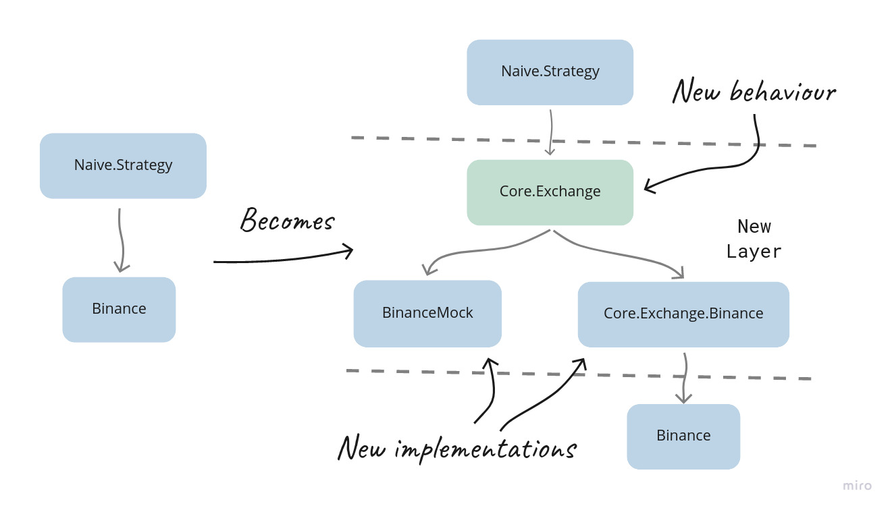

Chapter 21 Layers of abstraction
21.1 Objectives
- admitting the simplification
- abstracting the exchange
21.2 Admitting the simplification
There comes a time when I need to admit to something that I’ve learned on the way as I was writing this book and was misused throughout.
When we were using the Mox package, we were disappointed that most packages don’t provide behaviours we could use in our tests(to mock the actual implementations).
To fix that, we were creating behaviours for 3rd party packages that we are using like Binance or even Ecto.Repo. This approach felt weird, and it should, as I believe that was not the intended usage of the Mox package.
Instead, we should introduce an additional layer(of abstraction) on top of the 3rd party modules we are using. A typical example could be abstracting dealing with an exchange to an behaviour and providing different implementations(for example, one could be wrapping the Binance module):

In the example above, we will introduce a new behaviour module called Core.Exchange that would define the standard way to interact with any exchange. As this will be a generic exchange behaviour, it needs to accept and return generic structs(we will need to define those as well).
We will also create a new Core.Exchange.Binance module(wrapping up the Binance module) and update the BinanceMock module. Both will implement the Core.Exchange behaviour.
In this chapter, we will look into the intended way/scenario for using the Mox package, its advantages and disadvantages and go beyond and look into alternatives.
21.3 Abstracting the exchange
We will start with an intended use case for the Mox module, as it was mentioned above.
21.3.1 Defining the Core.Exchange behaviour
We will start by creating a new file /apps/core/lib/core/exchange.ex together with a new module inside it:
# /apps/core/lib/core/exchange.ex
defmodule Core.Exchange do
endNow, based on the way we are currently interacting with the Binance module inside the Naive.Strategy, we can define the following callback functions:
order_limit_buy/3 - almost the same as the Binance ’s order_limit_buy/4, just skipped the optional argument
# /apps/core/lib/core/exchange.ex
@callback order_limit_buy(symbol :: String.t(), quantity :: number(), price :: number()) ::
{:ok, Core.Exchange.Order.t()}
| {:error, any()}order_limit_sell/3 - almost the same as the Binance ’s order_limit_sell/4, just skipped the optional argument
# /apps/core/lib/core/exchange.ex
@callback order_limit_sell(symbol :: String.t(), quantity :: number(), price :: number()) ::
{:ok, Core.Exchange.Order.t()}
| {:error, any()}get_order/3 - the same as the Binance’s get_order/3
# /apps/core/lib/core/exchange.ex
@callback get_order(
symbol :: String.t(),
timestamp :: non_neg_integer(),
order_id :: non_neg_integer()
) ::
{:ok, Core.Exchange.Order.t()}
| {:error, any()}All of the above callbacks rely on the Core.Exchange.Order struct which we will add now inside the Core.Exchange module:
# /apps/core/lib/core/exchange.ex
defmodule Order do
@type t :: %__MODULE__{
id: non_neg_integer(),
symbol: String.t(),
price: number(),
quantity: number(),
side: :buy | :sell,
status: :new | :filled,
timestamp: non_neg_integer()
}
defstruct [:id, :symbol, :price, :quantity, :side, :status, :timestamp]
endThe above struct is a simplification of the Binance.Order struct limited to just the fields we are using in our strategy.
Additionally, we use the Binance module to fetch symbol filters inside the Naive.Strategy (we actually fetch the whole exchange info and then dig inside to find our filters) - we will create a dedicated struct for those filters:
# /apps/core/lib/core/exchange.ex
# add below inside the Core.Exchange module
defmodule SymbolInfo do
@type t :: %__MODULE__{
symbol: String.t(),
tick_size: number(),
step_size: number()
}
defstruct [:symbol, :tick_size, :step_size]
end
@callback fetch_symbol_filters(symbol :: String.t()) ::
{:ok, Core.Exchange.SymbolInfo.t()}
| {:error, any()}The final usage of the Binance module comes from the seed scripts, which fetch the exchange info just to get the list of the supported currencies. We will make getting a list of supported currencies part of our behaviour:
# /apps/core/lib/core/exchange.ex
# add below inside the Core.Exchange module
@callback fetch_symbols() ::
{:ok, [String.t()]}
| {:error, any()}This finishes the definition of the Core.Exchange behaviour. It should consist of five callback functions(fetch_symbols/0, fetch_symbol_filters/1, get_order/3, order_limit_buy/3 and order_limit_sell/3) together with two structs(Order and SymbolInfo).
21.3.2 Implementation of the Core.Exchange.Binance module
As we defined the behaviour, we can now wrap the production implementation(the Binance module) inside a module that will implement that behaviour.
We will start by creating a new directory called “exchange” inside the apps/core/lib/core directory, together with a new file called binance.ex. Inside it we will define a module that will implement the Core.Exchange behaviour:
# /apps/core/lib/core/exchange/binance.ex
defmodule Core.Exchange.Binance do
@behaviour Core.Exchange
endNow we are obliged to implement all functions defined in the behaviour, starting with the fetch_symbols/0:
# /apps/core/lib/core/exchange/binance.ex
alias Core.Exchange
@impl Core.Exchange
def fetch_symbols() do
case Binance.get_exchange_info() do
{:ok, %{symbols: symbols}} ->
symbols
|> Enum.map(& &1["symbol"])
|> then(&{:ok, &1})
error ->
error
end
endAs we can see - the case statement wraps the call to the Binance module, and either we evaluate further business logic or forward the error so the “consumer” of our library can decide what to do with the error condition. This pattern will appear in all our functions as the Core.Exchange.Binance module is our own “library” module.
Let’s continue with implementing the remaining functions defined in the behaviour:
# /apps/core/lib/core/exchange/binance.ex
@impl Core.Exchange
def fetch_symbol_filters(symbol) do
case Binance.get_exchange_info() do
{:ok, exchange_info} -> {:ok, fetch_symbol_filters(symbol, exchange_info)}
error -> error
end
end
defp fetch_symbol_filters(symbol, exchange_info) do
symbol_filters =
exchange_info
|> Map.get(:symbols)
|> Enum.find(&(&1["symbol"] == symbol))
|> Map.get("filters")
tick_size =
symbol_filters
|> Enum.find(&(&1["filterType"] == "PRICE_FILTER"))
|> Map.get("tickSize")
step_size =
symbol_filters
|> Enum.find(&(&1["filterType"] == "LOT_SIZE"))
|> Map.get("stepSize")
%Exchange.SymbolInfo{
symbol: symbol,
tick_size: tick_size,
step_size: step_size
}
endThe fetch_symbol_filters/1 function follows the previously discussed pattern. The fetch_symbol_filters/2, on the other hand, is a modified copy of the merge_filters_into_settings/2 function from the Naive.Strategy module now returning the Exchange.SymbolInfo struct.
Another function to be implemented to fulfil the behaviour is get_order/3:
# /apps/core/lib/core/exchange/binance.ex
@impl Core.Exchange
def get_order(symbol, timestamp, order_id) do
case Binance.get_order(symbol, timestamp, order_id) do
{:ok, %Binance.Order{} = order} ->
{:ok,
%Exchange.Order{
id: order.order_id,
symbol: order.symbol,
price: order.price,
quantity: order.orig_qty,
side: side_to_atom(order.side),
status: status_to_atom(order.status),
timestamp: order.time
}}
error ->
error
end
end
defp side_to_atom("BUY"), do: :buy
defp side_to_atom("SELL"), do: :sell
defp status_to_atom("NEW"), do: :new
defp status_to_atom("FILLED"), do: :filledAs in the case of the previously implemented functions, the get_order/3 implementation wraps the Binance’s function inside the case statement . To satisfy the Core.Exchange behaviour, it needs to return the Exchange.Order struct - hence the conversion. It also needs to convert the string side and status fields to atoms before assigning to struct(that’s the role of the status_to_atom and side_to_atom helper functions).
The final two functions to be implemented will be the order_limit_buy/3 and order_limit_sell/3:
# /apps/core/lib/core/exchange/binance.ex
@impl Core.Exchange
def order_limit_buy(symbol, quantity, price) do
case Binance.order_limit_buy(symbol, quantity, price, "GTC") do
{:ok, %Binance.OrderResponse{} = order} ->
{:ok,
%Exchange.Order{
id: order.order_id,
price: order.price,
quantity: order.orig_qty,
side: :buy,
status: :new,
timestamp: order.transact_time
}}
error ->
error
end
end
@impl Core.Exchange
def order_limit_sell(symbol, quantity, price) do
case Binance.order_limit_sell(symbol, quantity, price, "GTC") do
{:ok, %Binance.OrderResponse{} = order} ->
{:ok,
%Exchange.Order{
id: order.order_id,
price: order.price,
quantity: order.orig_qty,
side: :sell,
status: :new,
timestamp: order.transact_time
}}
error ->
error
end
endThat finishes our first implementation of the Core.Exchange behaviour. It will be used in the production by our Naive.Strategy, but before we will update it, let’s update the BinanceMock module to implement the same behaviour for testing/backtesting.
21.3.3 Updating the BinanceMock module to implement the Core.Exchange behaviour
As mentioned, the BinanceMock module must implement the Core.Exchange behaviour. It will (at compile time) guarantee that both Core.Exchange.Binance and BinanceMock share a common interface that can be used by the Naive.Strategy.
Fist we will start by declaring that the BinanceMock actually implements the Core.Exchange behaviour:
# /apps/binance_mock/lib/binance_mock.ex
defmodule BinanceMock do
@behaviour Core.Exchange # <= addedNext, we can replace all the aliases to the Binance structs with a single alias to the Core.Exchange module:
# /apps/binance_mock/lib/binance_mock.ex
alias Core.ExchangeDon’t forget to update all references to the Binance.Order with Exchange.Order module.
As the behaviour is now defined in the Core.Exchange module, we can remove all @type and @callback attributes.
Moving on, we will replace the get_exchange_info/0(together with it’s get_cached_exchange_info/0 helper function) with fetch_symbols/0 and fetch_symbol_filters/1(and their helper functions):
# /apps/binance_mock/lib/binance_mock.ex
def fetch_symbols() do
case fetch_exchange_info() do
{:ok, %{symbols: symbols}} ->
symbols
|> Enum.map(& &1["symbol"])
|> then(&{:ok, &1})
error ->
error
end
end
def fetch_symbol_filters(symbol) do
case fetch_exchange_info() do
{:ok, exchange_info} ->
{:ok, fetch_symbol_filters(symbol, exchange_info)}
error ->
error
end
end
defp fetch_exchange_info() do
case Application.get_env(:binance_mock, :use_cached_exchange_info) do
true ->
get_cached_exchange_info()
_ ->
Binance.get_exchange_info()
end
end
defp get_cached_exchange_info do
File.cwd!()
|> Path.split()
|> Enum.drop(-1)
|> Kernel.++([
"binance_mock",
"test",
"assets",
"exchange_info.json"
])
|> Path.join()
|> File.read()
end
defp fetch_symbol_filters(symbol, exchange_info) do
# <= this is a copy of `Core.Binance.fetch_symbol_filters/2` function
endThere are a few additional helpers above, and it got a bit long - let’s unpack it.
First, both the fetch_symbols/0 and fetch_symbol_filters/1 look very similar to the ones we implemented for the Core.Exchange.Binance module. The main difference here is that we are supporting cached exchange info by introducing the fetch_exchange_info/0 function, which branches out to either using the Binance module or the get_cached_exchange_info/0 function. The latter was updated to return the raw data instead of the Binance.ExchangeInfo struct.
Next, there’s the get_oder/3 function - as it’s working in the same way as per our behaviour, we will leave it as it is.
The final two functions to update will be the order_limit_buy/4 and order_limit_sell/4, which will now become three argument functions:
# /apps/binance_mock/lib/binance_mock.ex
def order_limit_buy(symbol, quantity, price) do
order_limit(symbol, quantity, price, "BUY")
end
def order_limit_sell(symbol, quantity, price) do
order_limit(symbol, quantity, price, "SELL")
endIn the above functions, we simplify skipped the fourth arguments to fulfil the behaviour.
The changes to different structs will have a ripple effect in other parts of the BinanceMock module:
# /apps/binance_mock/lib/binance_mock.ex
def generate_fake_order(...) do
...
%Exchange.Order{
id: order_id,
symbol: symbol,
price: price,
quantity: quantity,
side: side_to_atom(side),
status: status_to_atom("NEW"),
timestamp: current_timestamp
} # <= keys updated & `.new` dropped
end
defp side_to_atom("BUY"), do: :buy # <= added
defp side_to_atom("SELL"), do: :sell # <= added
defp status_to_atom("NEW"), do: :new # <= added
defp status_to_atom("FILLED"), do: :filled # <= added
def handle_call(
{:get_order, symbol, time, order_id},
...
) do
...
|> Enum.find(
&(&1.symbol == symbol and
&1.timestamp == time and # <= field updated
&1.id == order_id) # <= field updated
)
end
def handle_info(
%TradeEvent{} = trade_event,
...
) do
...
filled_buy_orders =
...
|> Enum.map(&Map.replace!(&1, :status, :filled)) # <= changed to atom
...
filled_sell_orders =
...
|> Enum.map(&Map.replace!(&1, :status, :filled)) # <= changed to atom
...
end
defp order_limit(symbol, quantity, price, side) do
...
{:ok, fake_order} # <= no need to convert between structs any more
end
# remove the `convert_order_to_order_response/1` function - not required anymore
# and finally ;)
defp convert_order_to_event(%Exchange.Order{} = order, time) do
%TradeEvent{
event_time: time - 1,
symbol: order.symbol,
trade_id: Integer.floor_div(time, 1000),
price: order.price,
quantity: order.quantity,
buyer_order_id: order.id,
seller_order_id: order.id,
trade_time: time - 1,
buyer_market_maker: false
} # ^^^^^^= updated mapping
endThe above changes finish the modifications to the BiananceMock. The module now correctly implements the behaviour.
21.3.4 Updating the Naive.Strategy
We can now move on to the code will use our implementations of the Core.Exchange behaviour - the Naive.Strategy module.
We will start by adding an alias to the Core.Exchange at the top of the module:
# /apps/naive/lib/naive/strategy.ex
alias Core.ExchangeNext, we can rename the configuration based @binance_client to @exchange_client and update references to it throughout the module:
# /apps/naive/lib/naive/strategy.ex
@exchange_client Application.compile_env(:naive, :exchange_client)Besides the above, we are now relying on the generic structs, so we need to update all reference to the Binance.OrderResponse and Binance.Order modules with the Exchange.Order (including updating all field names) - for example:
# /apps/naive/lib/naive/strategy.ex
# from:
%Position{
buy_order: %Exchange.Order{
order_id: order_id,
status: "FILLED"
},
sell_order: Exchange.Order{}
},
# to:
%Position{
buy_order: %Exchange.Order{
id: order_id, # <= key updated
status: :filled # <= updated to atom
},
sell_order: %Exchange.Order{}
}
# rename cheatsheet:
# order_id to id (do not use "global" file replace)
# orig_qty to quantity ("global" file replace safe)
# transact_time to timestamp ("global" file replace safe)
# "FILLED" to :filled ("global" file replace safe)As behaviour’s interface(public functions) differs from the Binance module, we need to update all calls that we simplified:
# /apps/naive/lib/naive/strategy.ex
{:ok, %Exchange.Order{} = order} = @exchange_client.order_limit_buy(symbol, quantity, price)
...
{:ok, %Exchange.Order{} = order} =
@exchange_client.order_limit_sell(symbol, quantity, sell_price)As now we will deal only with the Exchange.Order structs instead a pair of Binance.OrderResponse and Binance.Order, we can simplify the existing two clauses of broadcast_order/1 into a single one(and remove the convert_to_order/1 function):
# /apps/naive/lib/naive/strategy.ex
defp broadcast_order(%Exchange.Order{} = order) do
@pubsub_client.broadcast(
Core.PubSub,
"ORDERS:#{order.symbol}",
order
)
endThe final change to the Naive.Strategy module will be to update the fetch_symbol_settings/1 function (and remove the merge_filters_into_settings/3 function):
# /apps/naive/lib/naive/strategy.ex
def fetch_symbol_settings(symbol) do
{:ok, filters} = @exchange_client.fetch_symbol_filters(symbol)
db_settings = @repo.get_by!(Settings, symbol: symbol)
Map.merge(
filters |> Map.from_struct(),
db_settings |> Map.from_struct()
)
endThe function is now much more straightforward as we use the fetch_symbol_filters/1 function implemented by the behaviour.
At this moment, we can change the configuration to make the Naive.Strategy work:
# /config/config.ex
config :naive,
exchange_client: BinanceMock, # <= key updated
# /config/prod.exs
config :naive,
exchange_client: Core.Exchange.Binance # <= key and module updated
config :streamer,
exchange_client: Core.Exchange.Binance # <= key and module updated
# /config/test.exs
config :naive,
exchange_client: Test.BinanceMock, # <= key updatedWe can now test that Naive.Strategy works:
$ iex -S mix
...
iex(1)> Streamer.start_streaming("XRPUSDT")
...
iex(2)> Naive.start_trading("XRPUSDT")
...
21:27:08.947 [info] Position (XRPUSDT/1662841628946): Placing a BUY order @ 0.35630000, quantity: 561.00000000
...